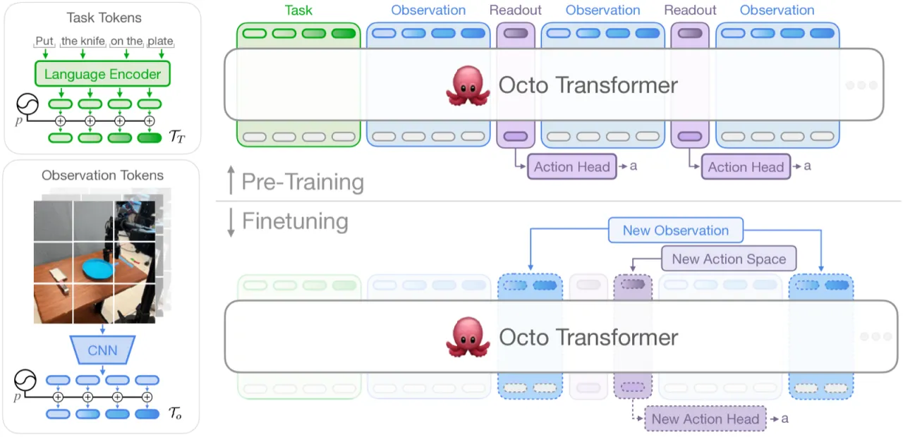
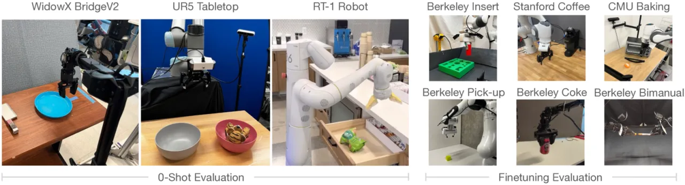
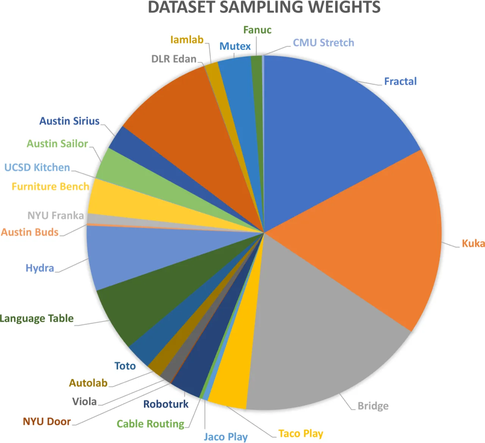
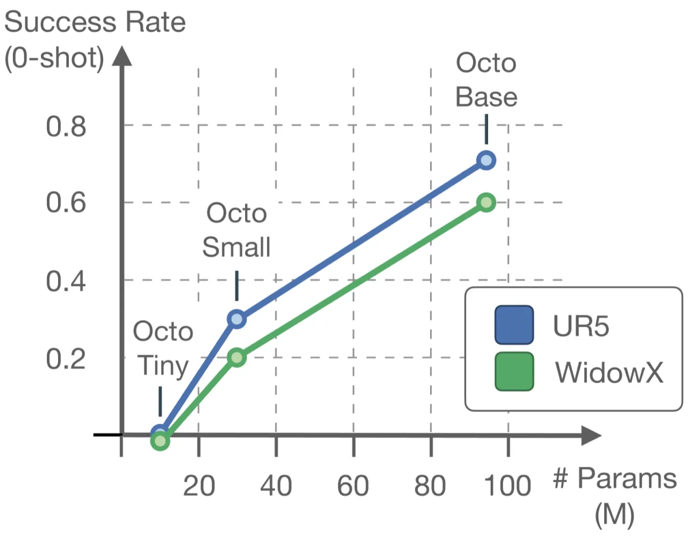
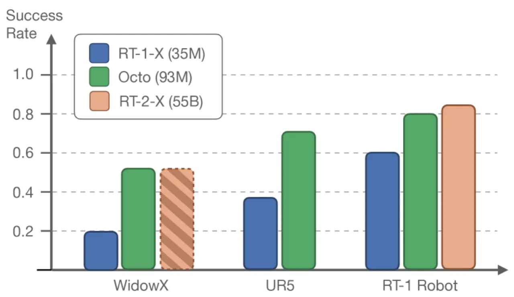

Octo 是一个基于 Transformer 的通用机器人策略，在来自 Open X-Embodiment 数据集的 80 万条机器人演示轨迹上预训练。它接受语言指令或目标图像作为输入，并能在消费级 GPU 上、数小时内微调适配到全新机器人平台——包括全新的观测输入（如力矩传感器）和全新的动作空间（如关节位置控制）。
大规模预训练已彻底改变了 NLP 与计算机视觉领域，但机器人学习为何仍难以复制这一成功？核心障碍在于机器人的多样性：不同的本体（embodiment）、传感器配置、动作空间和任务规范，使得统一的通用策略难以构建。现有的通用机器人策略（Generalist Robot Policies, GRP）通常将用户锁定在固定的观测输入格式上，且对新平台的微调支持十分有限。
"Octo is the first GRP that can be effectively finetuned to new observations and action spaces."


Octo 由三个核心模块组成：输入 tokenizer、Transformer 主干、以及基于 diffusion 的动作解码器。整体设计强调模块化与可扩展性——新的观测类型（如力矩传感器）或动作空间（如关节位置控制）可在微调阶段轻松接入，核心预训练权重保持不变。

Transformer 主干采用 block-wise masked attention 结构：观测 token 在时序上以因果（causal）方式关注更早时间步的观测与任务 token；专门设计的 "readout token" 被动汇聚信息，不影响观测 token 的注意力计算。这种结构使得不同类型的输入/输出可以在微调时灵活插拔，而不破坏预训练阶段学到的表征。
动作解码采用 diffusion-based policy head，预测动作 chunk（多步动作序列），而非单步 MSE 或离散动作。消融实验表明，这一设计对模型性能至关重要：在 WidowX 任务上，离散动作预测（18%）和连续 MSE 预测（35%）均远低于 diffusion head 对应的 Octo-Small 基线（83%）。
Octo 在来自 Open X-Embodiment 的 25 个数据集、共计 80 万条轨迹上预训练。训练数据混合包含多种机器人本体、相机视角和任务类型，是迄今为止规模最大的开源机器人预训练数据集之一。消融实验表明，使用全部 25 个数据集的混合（83%）显著优于仅用 RT-X 的 11 个数据集子集（60%），以及单一 Bridge Data（43%）。

实验在九个真实机器人平台上进行，分零样本（zero-shot）评估和微调（finetuning）评估两个维度。零样本测试对比 RT-1-X 和 RT-2-X；微调测试对比从头训练的 ResNet+Transformer baseline 和 VC-1 预训练特征。每类任务约 100 条目标域演示数据。
在零样本多机器人评估中，Octo 的成功率比 RT-1-X 高出 29%，尽管参数量远小于 RT-2-X（55B），Octo 与其性能相当。在 WidowX 任务上，目标图像条件（goal-conditioned）的成功率比语言条件（language-conditioned）高出 25%。

在六项微调评估任务中，Octo 平均成功率达 72%，比次优 baseline（VC-1）高出 52%。其中包含两项特殊挑战：Berkeley Insertion（新观测输入：力矩传感器）和 Berkeley Pick-Up / Berkeley Bimanual（新动作空间：关节位置控制），Octo 均表现出色。
| 任务 | ResNet+Transformer（从头） | VC-1 | Octo（ours） |
|---|---|---|---|
| Berkeley Insertion* | 10% | 5% | 70% |
| Stanford Coffee | 45% | 0% | 75% |
| CMU Baking | 25% | 30% | 50% |
| Berkeley Pick-Up† | 0% | 0% | 60% |
| Berkeley Coke | 20% | 10% | 100% |
| Berkeley Bimanual† | 20% | 50% | 80% |
| 平均 | 20% | 15% | 72% |
*新观测输入（force-torque sensor）；†新动作空间（joint position control）
以下消融均在 WidowX 平台 40 次试验、四项任务上进行：
| 组件/变体 | 成功率 |
|---|---|
| Octo-Small（完整版） | 83% |
| 仅用 RT-X 数据子集（11 个数据集） | 60% |
| 仅用 Bridge Data（单一数据集） | 43% |
| 离散化动作预测（Discretized） | 18% |
| 连续 MSE 动作预测 | 35% |
| ResNet-50 + Transformer（替换 ViT） | 70% |
消融结果表明：多样化数据混合、diffusion action head、以及 ViT 图像编码器是 Octo 成功的关键三要素。
"The current Octo model struggles with adequately processing wrist camera information. Often finetuning results were stronger when using only a third person camera instead of combining third person and wrist camera."预训练数据中仅有 27% 包含腕部相机信息，导致模型对该输入模态的利用不充分。
"Only 56% of the pretraining data contains language annotations"，导致语言条件策略性能系统性弱于目标图像条件策略。数据模态分布不均是根本原因。
模型完全依赖 imitation learning，训练于人类专家的最优演示。论文指出，"future work may consider learning from sub-optimal or online interaction data that require alternative objectives."
当前 Octo 仅在固定基座的单臂/双臂机器人上验证，论文明确指出未探索移动机器人（navigation and mobile manipulation）场景。
Zero-shot 性能"degrades in a new scene, and high degradation for novel behaviors like flipping or precise insertion"，说明预训练策略对分布外场景的鲁棒性有限。